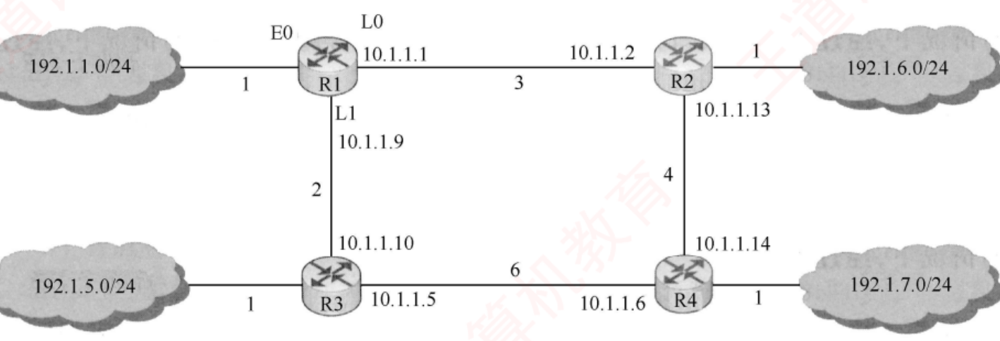
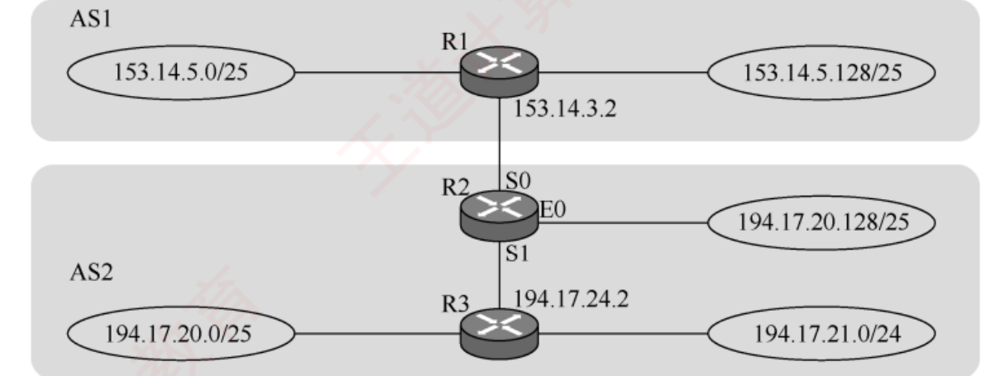

408
408先答旧题
ARP 跨网段时解析谁的 MAC？
DHCP 四步？
IPv6 地址多少位？路由器能分片吗？
路由表从哪来？少量网络可以手工配，这叫静态路由。大网络要路由器互相通信，自动算出来，这叫动态路由。图算法你已经会了（第10话），这一话讲怎么在分布式环境下用它。
其之壹两类算法
问邻居还是看地图
距离向量：问邻居「你到哪多远」，加上我到你的距离。没有全局信息。 链路状态：所有人都广播自己知道的链路，每人画完整地图，自己跑 Dijkstra。
距离向量
每个路由器只和邻居交换自己的整张路由表。收到后更新：
从 X 收到 <N, d>： 算 d+1（经 X 到 N 的距离）。
- 表里没有 N：加入，下一跳 X。
- 表里有 N，下一跳就是 X：一律用新值，即使变大了。X 是我通往 N 的路，它说的最新。
- 下一跳不是 X：
d+1更小才更新。
走一遍：R1 的表是 Net1 距离 3（经 R2），Net2 距离 5（经 R3），Net3 距离 2（经 R2）。R2 发来 Net1 4，Net2 2，Net3 8，Net4 6。全部加 1 得 5、3、9、7。
| 目的 | 旧 | 新 | 原因 |
|---|---|---|---|
| Net1 | 3 经 R2 | 5 经 R2 | 下一跳就是 R2，听它的 |
| Net2 | 5 经 R3 | 3 经 R2 | 更短 |
| Net3 | 2 经 R2 | 9 经 R2 | 下一跳就是 R2，听它的 |
| Net4 | 无 | 7 经 R2 | 新网络 |
链路状态
每个路由器把和自己相邻的链路状态洪泛给所有路由器。于是每个路由器都有相同的全网地图，各自用 Dijkstra 算最短路。只在链路变化时才发。
| 比较 | 距离向量 | 链路状态 |
|---|---|---|
| 交换内容 | 整张路由表 | 只有自己的邻接链路 |
| 发给谁 | 只发邻居 | 洪泛给所有路由器 |
| 知道多少 | 只知道方向和距离 | 全局拓扑 |
| 收敛 | 慢 | 快 |
其之貳层次路由
互联网太大，所有路由器都存整个网络放不下，所有人都用一种算法也协调不了。所以分成一个个自治系统 AS（一个机构管理的网络）。
- AS 内：内部网关协议 IGP（RIP、OSPF），追求最短。
- AS 间：外部网关协议 EGP（BGP），追求可达，并要符合商业策略。
其之參RIP
RIP
应用层，UDP 520。距离向量。
距离 = 跳数，最大 15，16 = 不可达。所以只适合小网络。
定期（30 s）只和邻居交换自己的整个路由表。180 秒收不到就认为邻居不在了。
坏消息传得慢（计数到无穷）；好消息传得快。
慢收敛的原因：距离向量只说「我到那多远」，不说路径，R3 不知道 R2 的路就是经过自己的。两者来回把距离加大，直到 16 才知道不可达。解决办法之一是水平分割（不把信息发回给来源）。
其之肆OSPF
OSPF
IP 数据报直接承载（协议号 89）。链路状态。Dijkstra。
洪泛给区域内所有路由器，只在变化时（或定期长周期）。
可分区域；主干区域 0；支持多路径负载均衡。
报文：Hello（发现邻居）、DD（数据库描述）、LSR（请求）、LSU（更新）、LSAck（确认）。
分区域的原因：洪泛的范围限制在区域内，减少开销。跨区域由区域边界路由器汇总。
其之伍BGP
AS 之间不能只看最短：要考虑政策（谁给钱，不走竞争对手）。每个 AS 内部的度量也不一样，比不了。所以只交换路径向量：到某网络要经过哪些 AS。
BGP
AS 之间。TCP 179。路径向量。
只寻求较好的路径（可达，且没有环），不求最优。
步骤：BGP 发言人之间建立 TCP 连接，交换路径向量。
路径里列出了经过的 AS，看到自己就知道有环，所以 BGP 不会计数到无穷。
记忆表
| 协议 | 封装 | 算法 | 范围 |
|---|---|---|---|
| RIP | UDP | 距离向量（跳数） | AS 内 |
| OSPF | IP | 链路状态（Dijkstra） | AS 内 |
| BGP | TCP | 路径向量 | AS 间 |
为什么各用不同的承载？RIP 定期全发，丢了下次再说，用 UDP。OSPF 自己有确认，直接用 IP。BGP 要可靠地交换大量信息，又只发增量，用 TCP。
合上页面说一遍：默写三种协议的封装、算法、范围。距离向量表怎么更新？
RIP：UDP、距离向量、AS 内。OSPF：IP、链路状态、AS 内。BGP：TCP、路径向量、AS 间。+1 后比较，同一下一跳一律听它的。
领域展开
RIP：UDP、跳数、16 不可达、坏消息慢。
OSPF：IP、Dijkstra、分区域。
BGP：TCP、AS 间、不求最优。
其之陸实战
再深一层
| 选项 | 错在哪 |
|---|---|
| A（R2 经 R1 …） | 方向反了——题目只说 R2 发给 R1，没有给出 R1 发给 R2 的信息，不能反推 R2 的选择 |
| B（R2 可达，跳数 16） | 把 16 当成了一个有效距离——16 的含义就是不可达 |
| C（R1 经 R2，跳数 17） | 算术上确实是 16 + 1 = 17，但 17 > 15 早已超限，RIP 中不存在 17 这个距离 |
| D ✔ | R2 都到不了，R1 更不可能经它到达 |
📌 把「16 = 不可达」当成一个符号而不是数字去理解，这类题就不会绕进去：见到 16，脑子里应该浮现的是「✘ 此路不通」，而不是「一个比 15 大 1 的数」。
⚠️ 顺带留意 A 项的思维陷阱：题目给的是单向信息（R2 → R1），任何关于反方向的结论都是无根据的——做题时先圈清楚「谁告诉谁」。
拓扑同 4.2 节 2016 真题的那张大图：R1 —— R2（NAT）—— R3，其中 201.1.2.0/25 是 R3 直连的网络，R1、R2、R3 两两之间通过点对点链路互连。

再深一层
直觉（错）：R3 发现直连网络挂了 ⟹ 距离置 16
⟹ 通告给 R2 ⟹ R2 也是 16
事实：R3 手里还存着 R1 和 R2 的距离向量（都说「我到该网 2 跳」）
⟹ R3 按 Bellman-Ford 重算：min(16, 2+1, 2+1) = 3
⟹ R3 以为能绕道 R1 或 R2 到达（其实那两条路最终也要回到 R3）
⟹ R2 收到「R3 说 3」，再算 min(2+1, 3+1) = 3
⟹ 三台机器就此开始互相传谣，距离一路爬升 4、5、6 …
⟹ 直到全部爬到 16 才真正判定不可达 —— 这就是无穷计数⭐ 根因：DV 算法的每个节点只知道邻居报的数，不知道那条路是不是绕回了自己——这正是链路状态算法（OSPF）用「全局拓扑」彻底避开的问题。📌 干扰项溯源：
| 选项 | 怎么造出来的 |
|---|---|
| A（2） | 以为「故障不影响 R2 原来的距离」 |
| B ✔（3） | 正解 |
| C（16） | 以为检测到不可达就直接置 16（书上明确标为「易错点」） |
| D（17） | 16 + 1 |
| R1 的 LSI | R2 的 LSI | R3 的 LSI | R4 的 LSI | ||
|---|---|---|---|---|---|
| Router ID | 10.1.1.1 | 10.1.1.2 | 10.1.1.5 | 10.1.1.6 | |
| Link1 | ID | 10.1.1.2 | 10.1.1.1 | 10.1.1.6 | 10.1.1.5 |
| IP | 10.1.1.1 | 10.1.1.2 | 10.1.1.5 | 10.1.1.6 | |
| Metric | 3 | 3 | 6 | 6 | |
| Link2 | ID | 10.1.1.5 | 10.1.1.6 | 10.1.1.1 | 10.1.1.2 |
| IP | 10.1.1.9 | 10.1.1.13 | 10.1.1.10 | 10.1.1.14 | |
| Metric | 2 | 4 | 2 | 4 | |
| Net1 | Prefix | 192.1.1.0/24 | 192.1.6.0/24 | 192.1.5.0/24 | 192.1.7.0/24 |
| Metric | 1 | 1 | 1 | 1 | |
2）当主机 192.1.1.130 向主机 192.1.7.211 发送一个 TTL = 64 的 IP 分组时，R1 通过哪个接口转发该 IP 分组？主机 192.1.7.211 收到的 IP 分组的 TTL 是多少？
3）若 R1 增加一条 Metric 为 10 的链路连接 Internet，则表中 R1 的 LSI 需要增加哪些信息？

| 目的网络 | 下一跳 | 接口 |
|---|---|---|
| 192.1.1.0/24 | — | E0 |
| 192.1.6.0/23 | 10.1.1.2 | L0 |
| 192.1.5.0/24 | 10.1.1.10 | L1 |
再深一层
⭐ 本题被王道明确点名为「数据结构和计算机网络的组合题」——第 1 问的内核就是跑一遍 Dijkstra：
| 目的子网 | 经 L0（R2 方向，代价 3） | 经 L1（R3 方向，代价 2） | 选谁 |
|---|---|---|---|
| 192.1.1.0/24 | 直连 E0，代价 1 | E0 | |
| 192.1.6.0/24（R2 直连） | 3 + 1 = 4 | 2 + 6 + 4 + 1 = 13 | L0 |
| 192.1.5.0/24（R3 直连） | 3 + 4 + 6 + 1 = 14 | 2 + 1 = 3 | L1 |
| 192.1.7.0/24（R4 直连） | 3 + 4 + 1 = 8 | 2 + 6 + 1 = 9 | L0 |
⚠️⚠️ 第 2 问的 TTL 是本题最容易错一个数的地方：
路径：主机 → R1 → R2 → R4 → 主机 192.1.7.211 TTL 减几 = 经过几个路由器，不是几段链路 ⟹ 经过 R1、R2、R4 共 3 个 ⟹ TTL = 64 − 3 = 61 （若按「链路段数 4」算会得到 60 —— 这是标准错答）⭐ 记法：每个路由器转发时减 1，源主机和目的主机都不减。
📌 第 3 问考的是「Internet 只能用默认路由」这个结论在 LSI 里的写法：增加一条直连网络表项：Prefix = 0.0.0.0/0，Metric = 10。注意它写在「Net」那一栏（直连网络）而不是「Link」栏（路由器间链路）——因为 Internet 不是一台 OSPF 邻居路由器。
再深一层
| 协议 | 下层 | 为什么选它 |
|---|---|---|
| RIP | UDP | 信息量小、每 30s 全量重发，丢了下轮就补 ⟹ 不需要可靠传输，要的是简单；且 UDP 支持广播 |
| OSPF | IP | 交换信息量大，报文要尽量短 ⟹ 省掉 UDP/TCP 首部；可靠性自己用 LSAck 实现，不必借传输层 |
| BGP | TCP | 跨 AS、网络环境复杂，必须保证可靠；且会话是半永久连接，正好契合 TCP |
⚠️ 「直接封装」四个字要留意：BGP 报文最终当然也在 IP 数据报里，但直接封装它的是 TCP；「直接」= 紧挨着的下一层，隔层不算（4.2.7 节的 2012 真题考的是同一个词）。
📌 记牢三个数字：UDP 520 / 协议号 89 / TCP 179，它们经常单独出现在选项里。
1）假设路由表结构为「目的网络 | 下一跳 | 接口」。利用路由聚合技术，给出 R2 的路由表，要求包括到达图中所有子网的路由，且路由表中的路由项尽可能少。
2）若 R2 收到一个目的 IP 地址为 194.17.20.200 的 IP 分组，R2 会通过哪个接口转发该 IP 分组？
3）R1 与 R2 之间利用哪个路由协议交换路由信息？该路由协议的报文被封装到哪个协议的分组中进行传输？

| 目的网络 | 下一跳 | 接口 |
|---|---|---|
| 153.14.5.0/24 | 153.14.3.2 | S0 |
| 194.17.20.0/23 | 194.17.24.2 | S1 |
| 194.17.20.128/25 | — | E0 |
再深一层
聚合出的 194.17.20.0/23 覆盖 194.17.20.0 ~ 21.255
⟹ 它顺带把 E0 的 194.17.20.128/25 也罩了进去
（引入了「多余地址」）
目的 194.17.20.200：
· 落在 /23 内 ✔（前缀长 23）
· 也落在 /25 内 ✔（前缀长 25，更长）
⟹ 最长前缀匹配 ⟹ 走 /25 那条 ⟹ 接口 E0⭐ 「聚合可以引入多余地址，靠更长前缀的具体路由把它们捞回来」——这是 CIDR 的标准工作方式：粗粒度的聚合路由负责「大方向」，细粒度的具体路由负责「例外」；正因为有最长前缀匹配兜底，聚合时才敢放心地「多罩一点」。📌 第 1 问的两个卷面细节：① 直连网络（E0 那条）的下一跳写「—」，不能填 IP；② 下一跳要填对端路由器接口的 IP（S0 方向填 R1 的 153.14.3.2，S1 方向填 R3 的 194.17.24.2）。
⭐ 第 3 问一句话两个考点：「不同 AS ⟹ BGP」+「BGP 是应用层协议，封装在 TCP 里（端口 179）」——与 2017 真题（UDP / IP / TCP）考的是同一张表。
做完再翻：这些题到底在问什么
封装表几乎是原样出题。RIP 更新题：+1 再比较，来自同一下一跳一律听它的；要算坏消息第一轮之后的距离。
OSPF 大题让你由链路状态信息画图、跑 Dijkstra，答案要写下一跳（从源出发走的第一步）。
路由聚合大题：同方向的子网合并，单独方向的长前缀靠最长匹配生效。